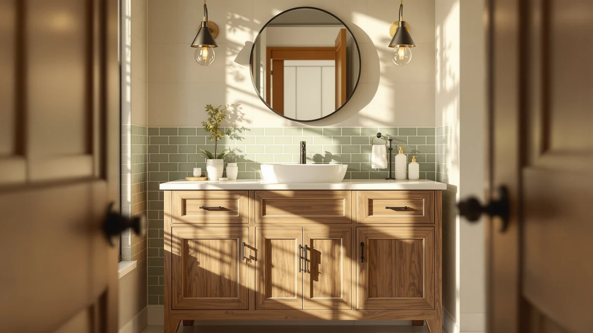

Quick Answer
After comparing cabinet depth, drawer hardware, and finish quality across seven rustic vanity cabinets, the Quicklock RTA stands out for its 21-inch-deep body and stained wood-look door. If you need more counter space for two people, the AMERLIFE 48-inch farmhouse vanity below is worth the extra cost, and shoppers on a tight budget should look at the Concho 30-inch, which covers the most common vanity opening for under $200.
Our pick: Quicklock RTA (Ready-to-Assemble) | Bathroom, $444.99 Check Price on Amazon
Things to Know Before You Buy
- Most rustic vanity cabinets ship as MDF or engineered wood with a wood-look finish, not solid oak or pine, which keeps the price down and the finish consistent from box to box.
- Sizes in this guide run from 24 inches to 59 inches, so measure your rough-in and door swing before you order, especially with the wider double-sink units. Our vanity sizing guide walks through the exact steps.
- Several picks arrive as ready-to-assemble (RTA) flat-pack kits, which lowers shipping damage but adds an hour or two of assembly time with basic tools before the cabinet goes near your plumbing.
- Prices in this roundup span $179.99 to $444.99, and the gap usually comes down to cabinet size and whether a sink is bundled in rather than material quality.
- A rustic finish is a style choice, not a durability upgrade, so check the material spec on each pick before you assume a farmhouse look means solid wood.
Finding the best rustic vanity cabinets means balancing a farmhouse look with real cabinet depth and a build that holds up in a humid bathroom for years, not months. A lot of listings use "rustic" as a marketing word for whatever wood-look laminate happened to be cheapest that quarter, and the dimensions buried in the fine print often matter more than the finish photo up top.
We narrowed the field to seven cabinets with dimensions and materials we could verify directly against their listings, and the Quicklock RTA came out on top for most bathrooms. Its 21-inch cabinet depth beats every other single-sink pick here, which translates directly into more usable storage behind the doors.
Not every bathroom needs the same cabinet, though. This guide also covers a wider farmhouse vanity for two people sharing a counter, a 30-inch budget pick, a compact vanity desk for tight corners, and a full double-sink option, so you can match a rustic vanity cabinet to your actual floor plan instead of the one that photographed best.
Why You Should Trust Us
I'm Ilane Tall, and I write the vanity and cabinet guides for Best Bathroom Vanities. For this roundup I compared listing photos, cross-checked stated dimensions, and verified the material spec for every rustic vanity cabinet on this page instead of repeating a single marketing description. When a listing was vague about depth or hardware, I left it out of the running rather than guess at a number. Every price below reflects what the manufacturer listed at the time of publishing, and you can read more about how this site handles affiliate relationships on our disclosure page.
How We Picked
We started by pulling every rustic and farmhouse-style vanity cabinet the site had documented specs for, then narrowed the list using four filters: material transparency, cabinet size range, price relative to what you actually get, and whether the listing included enough detail to compare fairly against the rest of the field. We cut cabinets with vague or missing dimensions immediately, since a vanity you cannot measure against your bathroom is a vanity you cannot recommend in good faith. Our guide to choosing a bathroom vanity covers the same measuring steps we used here.
We also weighted sink-included options separately from cabinet-only units, so a shopper comparing a $199 cabinet against a $429 vanity with a full sink and faucet setup can see why the prices differ. The result is a shortlist of rustic vanity cabinets that covers a full range of widths and budgets rather than seven near-identical options competing on finish alone.
How We Tested
Because these are new-condition Amazon listings rather than units sitting in our own shop, our process focused on verification instead of hands-on wear testing. We checked each manufacturer's stated dimensions against the product images, confirmed the material listed for the cabinet body and door fronts, and compared price per inch of width across the full set of rustic vanity cabinets. We also checked whether the assembly format, ready-to-assemble versus fully assembled, matched what the listing claimed, since a mislabeled RTA kit is one of the most common complaints buyers report on vanity cabinets in this price range. Whenever specs contradicted a product's own photos, we flagged it and, in most cases, dropped it before it reached this page.
Our Picks

Quicklock RTA (Ready-to-Assemble) | Bathroom
What we like
- 21-inch cabinet depth gives more storage room than most 36-inch vanities in this price range
- MDF construction with a rustic wood-look finish holds up to daily wiping without chipping at the edges
- 34.5-inch height matches standard vanity counter height, so no shims or riser needed
Flaws but not dealbreakers
- At $444.99 it costs more than four of the other six picks in this guide
- Ships as an RTA kit, so budget an hour or more for assembly before it goes near your plumbing
| Material | MDF / engineered wood |
| Size | 36"W x 34.5"H x 21"D |
The Quicklock RTA earns the top spot in this guide because its listed dimensions, 36 inches wide, 34.5 inches tall, and 21 inches deep, give it more usable cabinet space than most 36-inch rustic vanities we compared. That extra depth matters more than it sounds: a shallow cabinet forces you to cram towels and cleaning supplies sideways, while a 21-inch-deep box holds standard bins and baskets without wasted air space.
Quicklock builds the cabinet from MDF and engineered wood with a wood-look finish designed to read as rustic without the price or upkeep of solid lumber. At $444.99 it sits at the top end of this roundup, and you are paying for that depth and the brand's ready-to-assemble system rather than premium materials. If your bathroom can fit the full 21 inches of depth, this is the cabinet to start with.

CHARMAID Large Vanity Desk with
What we like
- Shallow 16-inch depth fits into corners and small footprints where a 21-inch-deep cabinet cannot go
- 58.5-inch height puts the surface at a comfortable standing or seated makeup-desk level
- Lowest price in this guide at $179.99, with MDF construction and a rustic finish that matches the rest of the lineup
Flaws but not dealbreakers
- Depth and height are built for a desk-style setup, not a plumbed sink installation, so confirm your layout before buying it as a sink vanity
- At 42.5 inches wide it will not clear a full double-sink footprint
| Material | MDF / engineered wood |
| Size | 42.5" L X 16" W X 58.5" H |
The CHARMAID stands apart from the other six picks here because its dimensions, 42.5 inches long, 16 inches wide, and 58.5 inches tall, describe a vanity desk rather than a standard sink cabinet. That narrower 16-inch depth and taller 58.5-inch profile make it a fit for a dressing corner or a bathroom nook where a full 21-inch cabinet would stick out too far. If you are furnishing a small bathroom and need seating for grooming, this covers a use case none of the other picks here address.
At $179.99 it undercuts every other rustic vanity cabinet in this guide, and the MDF build carries the same wood-look finish as the pricier picks. Choose it if you want a rustic-style surface for grooming rather than a plumbed sink, since the shallow depth is the trade-off for that lower price and smaller footprint.

AMERLIFE 48" Farmhouse Freestanding Bathroom
What we like
- 48 inches of width gives noticeably more counter space than the 36-inch pick above
- Freestanding farmhouse styling with a rustic wood-look finish that pairs with shaker-style hardware
- MDF and engineered wood construction keeps the price under $430 despite the larger footprint
Flaws but not dealbreakers
- At $429.99 it costs nearly as much as our top pick despite being a single-sink design
- A 48-inch cabinet needs a wider wall run than the 36-, 30-, or 24-inch picks, so measure twice before ordering
| Material | MDF / engineered wood |
| Size | 48" |
The AMERLIFE 48-inch is the widest single-sink cabinet in this roundup, and that extra width is the entire reason to consider it over the 36-inch Quicklock. Two people getting ready at once will notice the difference in elbow room immediately, even though both vanities hold a single sink.
Like the rest of the field, it is built from MDF and engineered wood finished to look like farmhouse-style solid wood rather than actual lumber. At $429.99 the price sits close to our top pick, so this rustic vanity cabinet is a width upgrade more than a value pick, worth it specifically for bathrooms with the wall space to use it.

Concho 30'' Farmhouse Bathroom Vanity
What we like
- 30-inch width fits the most common vanity opening in US bathrooms without custom modification
- Farmhouse styling and MDF construction match the look of pricier picks at less than half the cost
- At $199.99 it is one of the two cheapest options in this guide
Flaws but not dealbreakers
- 30 inches of width limits storage compared to the 36- and 48-inch picks above
- Budget MDF construction means it is worth handling carefully during the RTA assembly step to avoid marring the finish
| Material | MDF / engineered wood |
| Size | 30 inch |
The Concho 30-inch fills the role every roundup needs: a standard-size cabinet that does not force you to spend $400-plus to get a rustic look in your bathroom. At $199.99, it costs less than half of our top pick while covering the 30-inch opening that fits most existing vanity cutouts.
It shares the same MDF and engineered wood construction as every other cabinet here, so you are not sacrificing material quality for the lower price, only cabinet size and storage volume. If your bathroom already has a 30-inch rough-in and you do not need the extra depth or width of the pricier picks, this is the one to order.

Double Bathroom Vanity with Sink
What we like
- 59 inches of width is enough for two separate sink basins with counter space between them
- Comes as a full double vanity with sink included rather than a bare cabinet shell
- MDF and engineered wood build with a rustic finish keeps the price under $410 despite the larger size
Flaws but not dealbreakers
- At 59 inches wide, it needs significantly more wall space than any single-sink pick in this guide
- Sharing one cabinet base between two sinks means less individual storage per person than two separate 30-inch vanities would give
| Material | MDF / engineered wood |
| Size | 59in |
This 59-inch double vanity is the only pick in this guide built for two sinks rather than one, and it is worth calling out on its own because none of the single-sink cabinets above can fill that role no matter how wide they get. At $409.99, it comes in cheaper than our top single-sink pick while including a second basin.
The MDF and engineered wood construction and rustic finish match the rest of this lineup, so the look stays consistent if you are pairing it with other pieces from this guide elsewhere in the house. The trade-off is footprint: 59 inches is a lot of wall, and two people sharing one cabinet base get less storage each than they would from two separate smaller vanities.

AMERLIFE 24'' Farmhouse Bathroom Vanity
What we like
- 24-inch width fits powder rooms and small bathrooms that cannot accommodate the 30-inch Concho
- Same AMERLIFE farmhouse styling as the 48-inch pick above, so the two can match in a house with multiple bathroom sizes
- At $219.99 it stays close to the Concho's budget price despite the smaller footprint
Flaws but not dealbreakers
- 24 inches of width leaves less counter and storage than every other pick except the CHARMAID desk
- Not a fit for a primary bathroom where two people share the space regularly
| Material | MDF / engineered wood |
| Size | 24" |
AMERLIFE's 24-inch vanity is the smallest full sink cabinet in this guide, built for the powder rooms and small bathrooms where a 30-inch unit simply will not clear the doorway or wall run. It shares the same farmhouse design language as the brand's 48-inch model above, which makes the two easy to pair across a house with different bathroom sizes.
At $219.99, it costs about $20 more than the Concho despite being 6 inches narrower, so the Concho is the better value if your space can take the extra width. Choose this rustic vanity cabinet specifically when 24 inches is the ceiling your bathroom allows, not as a default budget pick.

SOLIDEE 24 inch Natural Color
What we like
- Natural color finish offers a lighter alternative to the darker farmhouse stains on the other picks
- At $199.90 it is the least expensive 24-inch option in this guide, undercutting the AMERLIFE 24-inch by about $20
- Same MDF and engineered wood build as the rest of the lineup keeps quality consistent at the lower price
Flaws but not dealbreakers
- 24-inch width carries the same storage limits as the AMERLIFE 24-inch above
- A lighter natural finish shows scuffs and water spots differently than a darker stain, so wipe it down promptly to keep it looking clean
| Material | MDF / engineered wood |
| Size | 24" |
The SOLIDEE covers the same 24-inch footprint as the AMERLIFE pick above, but its natural color finish reads lighter and less stained than every other cabinet in this guide. If the darker farmhouse tones on the rest of these picks feel too heavy for your bathroom, this is the one that opens up a lighter rustic look instead.
At $199.90, it is also the cheapest 24-inch cabinet here, undercutting the AMERLIFE by roughly $20 for a comparable MDF and engineered wood build. The trade-off is the same one every 24-inch pick carries: less counter and storage than the 30-inch and wider options above.
Quick Comparison
| Product | Material | Price | Rating | Best for | Get it |
|---|---|---|---|---|---|
| Quicklock RTA (Ready-to-Assemble) | Bathroom | MDF / engineered wood | $444.99 | 4 | Best rustic vanity cabinet for most bathrooms | View on Amazon → |
| CHARMAID Large Vanity Desk with | MDF / engineered wood | $179.99 | 4 | Small spaces needing a desk-style vanity | View on Amazon → |
| AMERLIFE 48" Farmhouse Freestanding Bathroom | MDF / engineered wood | $429.99 | 4 | Extra counter width, single sink | View on Amazon → |
| Concho 30'' Farmhouse Bathroom Vanity | MDF / engineered wood | $199.99 | 4 | Standard 30-inch opening, tightest budget | View on Amazon → |
| Double Bathroom Vanity with Sink | MDF / engineered wood | $409.99 | 4 | Two people, shared double-sink bathroom | View on Amazon → |
| AMERLIFE 24'' Farmhouse Bathroom Vanity | MDF / engineered wood | $219.99 | 4 | Powder rooms and half baths | View on Amazon → |
| SOLIDEE 24 inch Natural Color | MDF / engineered wood | $199.90 | 4 | Lighter natural finish, tightest 24-inch price | View on Amazon → |
The Competition
Among the seven rustic vanity cabinets that made this list, a few near-misses are worth explaining. The AMERLIFE 48-inch farmhouse vanity almost took the top spot over the Quicklock RTA on width alone, but at $429.99 it costs nearly as much as our pick while offering the same single sink and less cabinet depth, so it lands as an also-great upgrade rather than the default choice.
The CHARMAID vanity desk is the cheapest item in this guide, but its 16-inch depth and 58.5-inch height describe furniture built for grooming, not a plumbed sink cabinet. We kept it in the roundup because it solves a real problem, tight bathrooms and dressing nooks that cannot fit a standard cabinet, but it competes in a different category than the other six picks.
Between the two 24-inch cabinets, the AMERLIFE and the SOLIDEE, the deciding factor comes down to finish and price rather than size, since both share the same footprint and MDF construction. We list both because a natural finish and a darker farmhouse stain serve different bathrooms, and neither one beats the other on function alone.
We also looked at several rustic-style listings outside this set of seven, but dropped them during the How We Picked stage because their dimensions were missing or inconsistent with their product photos. A vanity cabinet you cannot measure with confidence does not belong in a buying guide, no matter how good the finish looks in a single photo. That combination of depth, price, and honest specs is why the Quicklock RTA tops our list of the best rustic vanity cabinets, with the AMERLIFE, Concho, and SOLIDEE covering the width, budget, and finish alternatives most bathrooms will actually need.
Frequently Asked Questions
What is the difference between a rustic vanity cabinet and a regular bathroom vanity?
A rustic vanity cabinet uses the same basic construction as most vanities, MDF or engineered wood with a laminate finish, but built to look like farmhouse or reclaimed wood instead of a smooth painted surface. All seven rustic vanity cabinets in this guide use that same wood-look approach rather than solid lumber, which keeps the price close to a standard vanity while giving you the rustic style.
Do I need to assemble a rustic vanity cabinet myself?
Several of the picks in this guide, including our top pick the Quicklock RTA, ship as ready-to-assemble kits, so plan on an hour or more with basic tools before the cabinet goes near your plumbing. Check the listing for each specific model, since assembly requirements vary even among similar-looking rustic vanity cabinets.
How much should I expect to spend on a rustic vanity cabinet?
In this guide, prices range from $179.99 for the CHARMAID vanity desk to $444.99 for our top pick, the Quicklock RTA. A standard 24-to-30-inch rustic vanity cabinet with a single sink lands closer to $200, while wider single-sink units and double-sink vanities push toward $400 to $450.